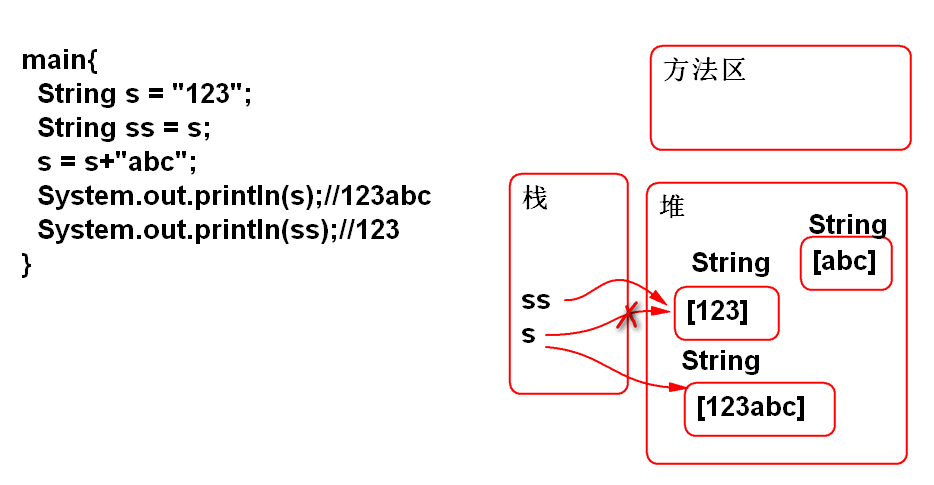
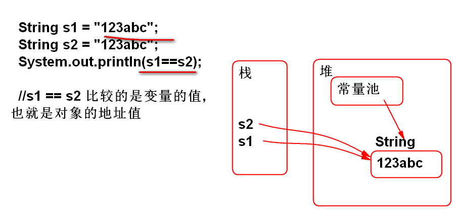
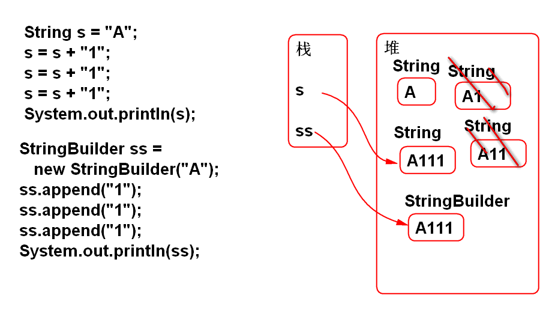

刘苍松 15601035818
http://doc.tedu.cn
学习String提供的那些方法？这些方法有那些功能！学会利用这些功能!
任何的操作也不能改变这个字符数组的内容
String s = "123";
String ss = s;
s = s+"abc";
System.out.println(s);//123abc
System.out.println(ss);//123
说明: 在如上代码中改变的是字符串引用变量，但是字符串没有变！好处是字符串可以“作为”基本类型使用！
原理:

Java中的字符串常量是尽肯能重复使用的！好处是节省资源（内存）
原理:

经典题目：
String s1 = "1"+"23"+"abc";
String s2 = "1"+23+"abc";
String s3 = '1'+23+"abc";
System.out.print(s1==s2);
System.out.print(s1==s3);
如上代码的执行结果：
A.truetrue B.truefalse C.falsetrue D.falsefalse
字符串中封装了一个字符数组，字符串中的字符就是char类型的数据。
案例：
String s = "Tom and Jerry";
// 0123456789012
char c = s.charAt(4);
System.out.println(c);//a
System.out.println((int)c);//97
找出一个字符在字符串中的位置：
indexOf() 1. 如果有重复，找出左侧第一个位置 2. 如果没有找到，返回-1
案例：
String s = "Tom and Jerry";
int i = s.indexOf('a');
System.out.println(i);//4
i = s.indexOf('r');
System.out.println(i);//10
i = s.indexOf('X');
System.out.println(i);//-1
str.indexOf("查找字符串", 起始位置)
String url = "http://tedu.cn/index.html";
int i = url.indexOf("/",7);
System.out.println(i);
反序查找：从右到左查找，返回字符的位置
String url = "http://tedu.cn/index.html";
int i = url.lastIndexOf("/");//14
System.out.println(i);//14
查找手册练习：
从字符串中截取一部分作为子字符串
url.substring(起始位置)
//从起始位置开始到最后截取为子字符串
String url = "http://tedu.cn/index.html";
String filename = url.substring(15);
// filename = index.html
url.substring(起始位置, 结束位置)
//从起始位置开始到结束位置截取为子字符串
String url = "http://tedu.cn/index.html";
// 01234567890123456
// 包括起始不包括结束位置
String str = url.substring(7, 14);
String str = url.substring(7, 7+8);
String str = " \t Tom \n \r";
String s = str.trim();
检测一个字符串是否以指定字符串开头或结尾
String str = "Hello World!";
boolean b = str.startsWith("Hello");//true
b = str.startsWith("World");//false
b = str.endsWith("World");//false
b = str.endsWith("!");//true
案例:
String name = "demo.JPG";
if(name.toLowerCase().endsWith(".jpg")){
System.out.println("图片文件");
}
Java 提供的用于计算字符串的API， 其运算性能好：
案例：
String s = "A";
s = s + "1";
s = s + "1";
s = s + "1";
System.out.println(s);
原理：

性能比较：
String s = "A";
long t1 = System.currentTimeMillis();
for(int i=0; i<10000; i++){
s = s+"1";
}
long t2 = System.currentTimeMillis();
System.out.println(s.length());
System.out.println(t2-t1);
StringBuilder ss =
new StringBuilder("A");
t1=System.nanoTime();
for(int i=0; i<10000; i++){
ss.append("1");
}
t2 = System.nanoTime();
System.out.println(ss.length());
System.out.println(t2-t1);
StringBuilder API:
StringBuilder buf=
new StringBuilder();
buf.append("李洪鹤老师...");
buf.insert(0, "那一年");
buf.replace(4, 4+2, "某人");
buf.delete(6, 6+2);
String s = buf.toString();
System.out.println(s);
http://svn.tedu.cn/svn/1702se/stu0001 stu0001 xxxx
http://svn.tedu.cn/svn/1702se/stu0002 stu0002 xxxx ... http://svn.tedu.cn/svn/1702se/stu0500 stu0500 xxxx